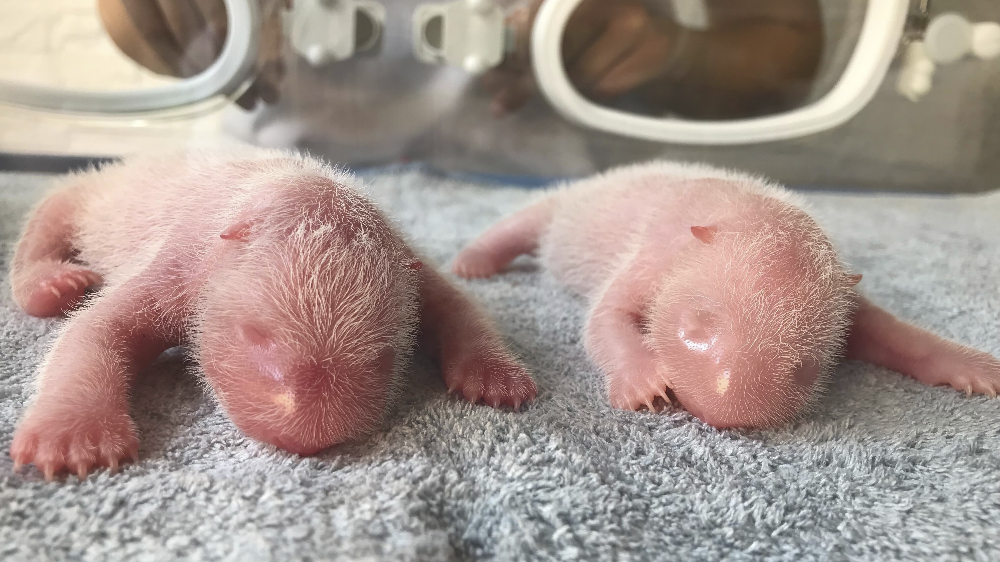
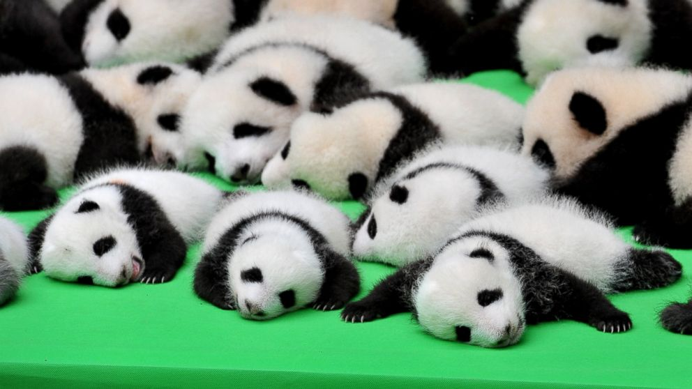

Little 'Hello' from cutie pandas
 Pandas live mainly in temperate forests high in the mountains of southwest China, where they subsist almost entirely on bamboo. They must eat around 26 to 84 pounds of it every day, depending on what part of the bamboo they are eating. They use their enlarged wrist bones that function as opposable thumbs.
The giant panada usually give birth to two little pandas. Newborn giant panda cubs are born pink, hairless and blind. They weigh 3-5 ounces and are about the size of a stick of butter. At 1/900th the size of its mother, a giant panda baby is the smallest mammal newborn relative to its mother's size, except for a marsupial, such as a kangaroo or opossum.
Baby panda favour things likes...
- Afternoon sunbake in the baby panda nursery with all the friends
- Great tree climber, may fall down because of practicing some new cool poses
- Spend most of time playing or 'kungfu' training
- Very good at naughty stuffs
- Yummy yummy comes to my tummy